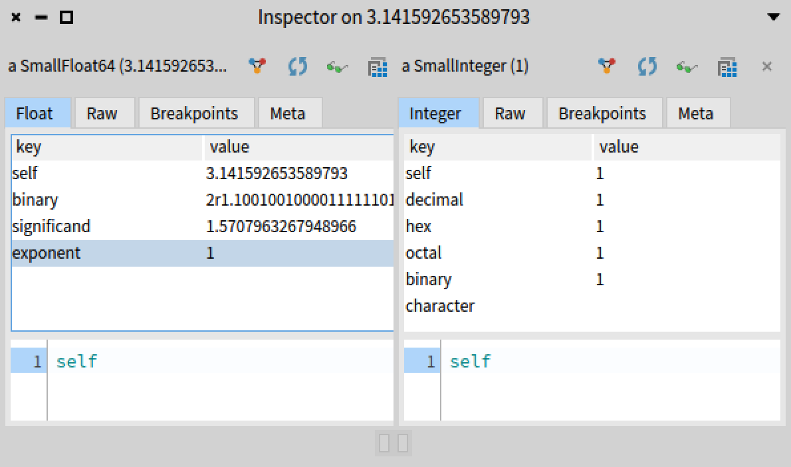
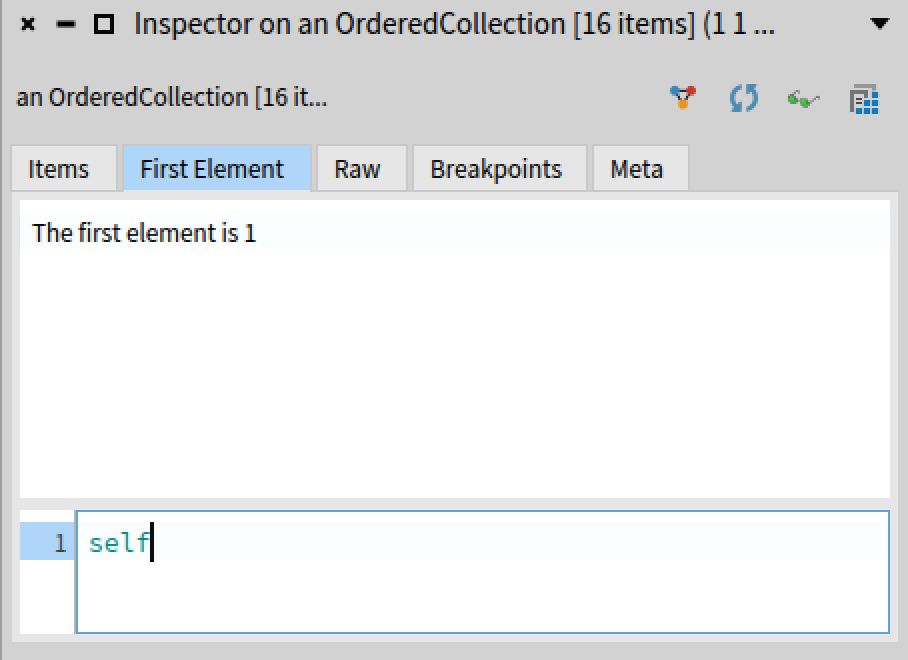
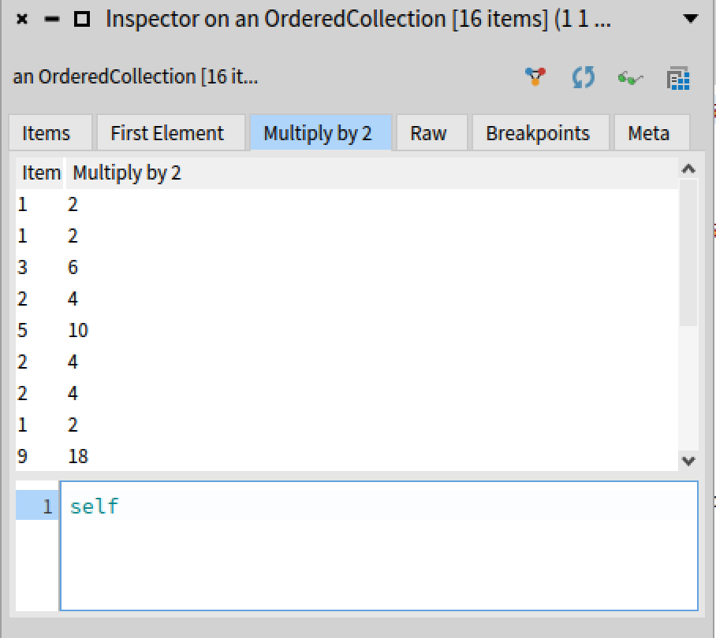
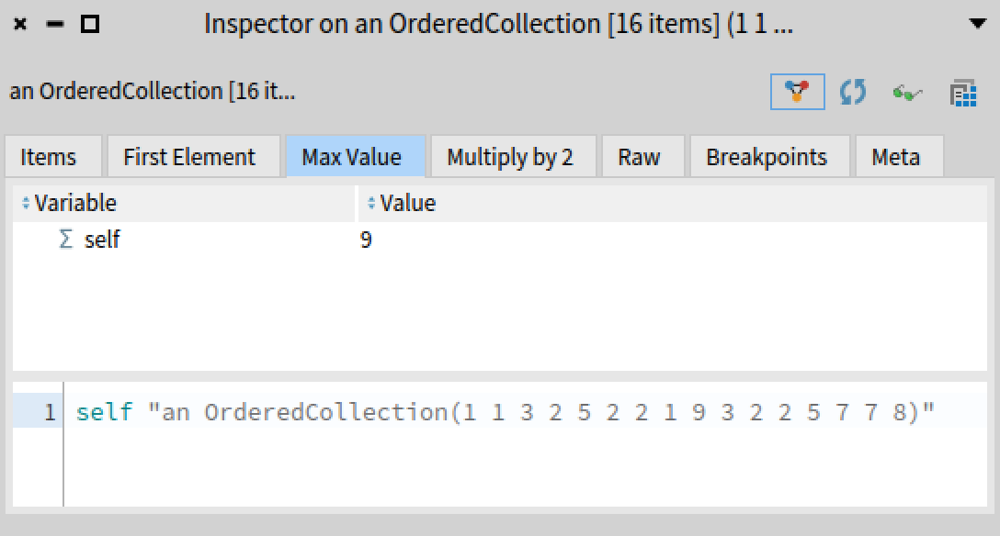
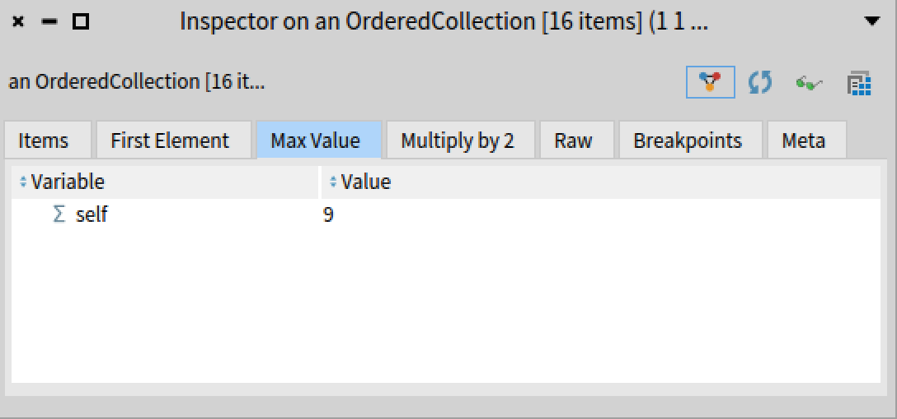
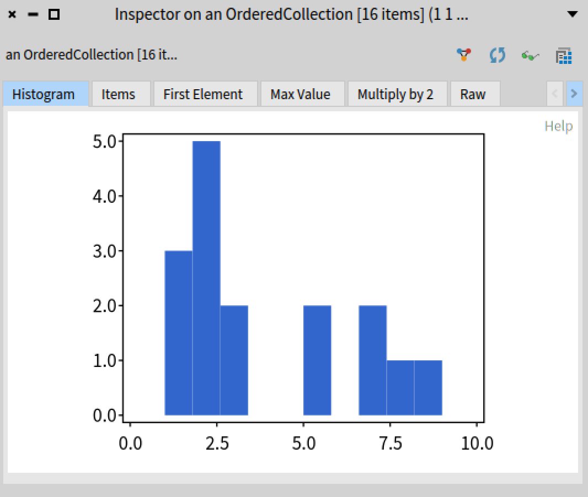

19 Customizing your Inspector
This chapter was originally written by Iona Thomas and we thank her for letting us use this material.
The Inspector is our favorite tool to look at and interact with objects. In Pharo, inspecting an object means opening this tool and interacting with your object. It is a key tool when developing in Pharo. It allows one to navigate the object structure, look at the state of the variables, change their value, or send messages. The inspector as most tools of the Pharo IDE is a tool written in Spec. In addition you can extend the Inspector to show information that is best suited for you. This is what we will see in this chapter.
19.1 Creating custom tabs
If you used the inspector a bit, you may have noticed that some objects have additional tabs showing up in the inspector.
For example, both Floats and Integers have their first tabs showing different representations of numbers, as shown in Figure 19.1.

Another example is the FileReference class. When a file reference is inspected, according to the type of the file, different tabs show up with relevant information.
Creating a new tab is as simple as reusing existing Spec presenters or defining new ones for your specific case. For example, you can define a tab displaying a specific Roassal visualization.
The following sections explain how to add a few additional tabs to instances of OrderedCollection. This class already has a custom tab showing the list of its items which is defined by its superclass Collection.
19.2 Adding a tab with text
Let's add a first tab containing a text describing the first element of the collection. Define the following method:
OrderedCollection << inspectionFirstElement
<inspectorPresentationOrder: 1 title: 'First Element'>
^ SpTextPresenter new
text: 'The first element is ', self first asString;
beNotEditable;
yourselfLet us explain a bit the method definition
<inspectorPresentationOrder: 1 title: 'First Element'>is a pragma that is detected when creating an inspector on an object. When creating an inspector on an instance ofOrderedCollection, this method will be used to generate a tab. The title of the tab will beFirst Element, it will have position 1 in the order of tabs.- The content of the tab is returned by the tagged method. Here we are creating a text presenter (
SpTextPresenter) with the content we want and we specify that it should not be editable. This gives us the result shown in Figure 19.2.

Notice that our new tab is in the second position. This is because in Collection<<inspectionItems: (the method defining the Items tab) the order parameter is 0.
19.3 A tab with a table
Let's create a new tab that will display a table if the collection contains only numbers. It will show each number and the result of multiplying that number with 2.
First let's create the tab with the table:
OrderedCollection << inspectionMultipliedByTwo
<inspectorPresentationOrder: 10 title: 'Multiply by 2'>
| itemColumn multipliedByTwoColumn |
itemColumn := SpStringTableColumn
title: 'Item'
evaluated: #yourself.
itemColumn width: 30.
multipliedByTwoColumn := SpStringTableColumn
title: 'Multiply by 2'
evaluated: [ :each | each * 2 ].
^ SpTablePresenter new
addColumn: itemColumn;
addColumn: multipliedByTwoColumn;
items: self;
beResizable;
yourselfWhen we inspect a collection of numbers we see the tabs shown in Figure 19.3.

19.4 Tab activation condition
If the collection contains elements that are not numbers, the tab crashes and looks like a red rectangle. By defining a method with the name xContext: (where x is the name of the method defining the tab) we can specify when we want to activate a given tab.
For example, the method defining the new tab is named inspectionMultipliedByTwo so
the method defining the condition of the tab activation is named inspectionMultipliedByTwoContext:. We define it as follows:
OrderedCollection << inspectionMultipliedByTwoContext: aContext
^ aContext active: self containsOnlyNumbersOrderedCollection << containsOnlyNumbers
^ self allSatisfy: [ :each | each isNumber ]These two methods ensure that the tab is only displayed when there are only numbers in the collection.
19.5 Adding a raw view of a specific element of the collection
Sometimes you may want to provide addition tab but without any interpretation about the contents. This is what we call a raw view. For this we have to return an instance of
StRawInspectionPresenter.
For example, adding a tab showing the raw view of the max value is expressed as follows:
OrderedCollection << inspectionMaxValue
<inspectorPresentationOrder: 5 title: 'Max Value'>
^ StRawInspectionPresenter on: self maxOrderedCollection << inspectionMaxValueContext: aContext
^ aContext active: self containsOnlyNumbers
19.6 Removing the evaluator
As we can see in Figure 19.4, the self in the evaluator does not match the self in the max value, which is confusing. So we will hide the evaluator.
OrderedCollection << inspectionMaxValueContext: aContext
aContext withoutEvaluator.
^ aContext active: self containsOnlyNumbersBy reinspecting the same collection we see the inspector in Figure 19.5.


19.7 Adding Roassal charts
Roassal allows one to define visualizations. Such visualizations can also be added to the Inspector tabs.
The library includes some common graphs like a histogram. Let's add a histogram of the values if there are only numbers in the collection. Roassal visualizations can be embedded in a presenter by sending the asPresenter message to an instance of RSBuilder. In the code below, RSHistogramPlot is a subclass of RSBuilder. You can also use a SpRoassalPresenter or SPRoassalInspectorPresenter.
OrderedCollection << inspectionIntegerHistogram
<inspectorPresentationOrder: -1 title: 'Histogram'>
| plot |
plot := RSHistogramPlot new x: self.
^ plot asPresenterOrderedCollection << inspectionIntegerHistogramContext: aContext
aContext active: self containsOnlyNumbers.
aContext withoutEvaluator.By inspecting { 1 . 1 . 3 . 2 . 5 . 2. 2 . 1. 9. 3 . 2. 2. 5 . 7 . 7 . 8 } asOrderedCollection we see the inspector shown in Figure 19.6.
19.8 Conclusion
In this chapter, we presented briefly how you can extend the Inspector adding specific tabs. This will shape the way you can see and interact with your objects. We presented how to define conditional tabs, as well as embed visualizations.